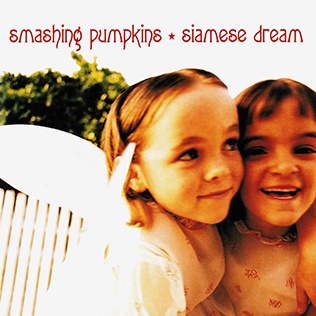

My Favorite Music Albums
Rock
-
 In Rainbows - Radiohead
In Rainbows - Radiohead
-

Siamese Dream - The Smashing Pumpkins
-
 Faith - The Cure
Faith - The Cure
Top Three Songs:
- House of Cards
- Mayonaise
- Primary
Pop
-
 SAWAYAMA - Rina Sawayama
SAWAYAMA - Rina Sawayama
-
 Melodrama - Lorde
Melodrama - Lorde
-
 1989 - Taylor Swift
1989 - Taylor Swift
Top Three Songs:
- Snakeskin
- Hard Feelings/Loveless
- Clean
Indie
-
 Punisher - Phoebe Bridgers
Punisher - Phoebe Bridgers
-
 The Record - boygenius
The Record - boygenius
-
Soft Sounds from Another Planet - Japanese Breakfast
Top Three Songs:
- Punisher
- Revolution 0
- Machinist
Can you generate a webpage where I can list my favorite music albums
When the page opens can you make it into a grid shape where each column is a different genre
There should also be an area for me to list different songs from each album
Add an area where I can add a link to the playlist with the songs from these albums